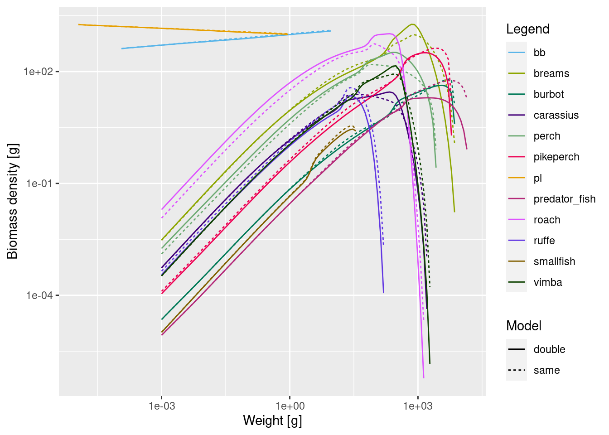

library(mizerExperimental)
library(mizerMR)
library(tidyverse)
# Load tuned model with original selectivity
cm <- readParams("cur_model_resilient.rds")Explore fishing scenarios
Introduction
Mizer is a tool that can be used to simulate a dynamic size spectrum in a marine ecosystem, subject to changes through time, such as fishing pressure. It is a dynamic multi-species model with emergent growth, reproduction and biomass, so it allows us to better understand how changes in fishing mortality can affect the entire ecosystem.
In the previous week we have been focused on the steady state of the model. Now we are ready to make changes through time, which means that the ecosystem will move away from the tuned steady state.
For explorations in this tutorial we will be using our mizer model for the Curonian lagoon. We will load the model from our previous tutorial where we tuned reproduction level of each species.
Mizer allows complicated setups of multiple fishing gears and selectivities, but we will start with a few simple scenarios and give references for further reading to users who want to explore more.
Scenario 1: Change fishing effort
The first option most users want to explore is to see what happens if we start fishing more or if we reduce fishing mortality. We will use our Curonian model with tuned reproduction and change the total fishing effort. We will run the simulation with the changed effort long enough so that it again settles down to a steady state and then look at how the system evolved over this time period.
We remind ourselves of the current fishing effort to which we tuned the model in week 2:
initial_effort(cm)Main
0.3 We now simulate the result of doubling the fishing effort to 0.6.
sim_double_effort <- project(cm, effort = 0.6, t_max = 30)We have assigned the resulting MizerSim object to the variable sim_double_effort. Our convention is to include sim_ in the variable name when we assign a MizerSim object.
We can now analyse the time series contained in that MizerSim object. For example we can look at how the species biomasses changed over time:
plotlyBiomass(sim_double_effort)The changes in biomass can be seen more clearly if we plot the relative change compared to the initial biomass:
plotlyBiomassRelative(sim_double_effort)We can see that, surprisingly, after doubling fishing effort on all species, the biomasses of breams, roach, vimba, perch and carassius increased rather than decreased!
To understand how that is possible, we have to look at how the spectra have changed. After all mizer is all about changes at size. Looking at overall biomasses does not tell use about size dynamics. We can compare the spectra using the plotSpectra2() function:
plotSpectra2(sim_double_effort, 'double', cm, 'same', power = 2)
Again, the changes are more visible if we plot relative change with respect to the initial spectra:
plotlySpectraRelative(cm, sim_double_effort)Fishermen of course very interested in the fisheries yield. The time series of yields over time is:
plotlyYield(sim_double_effort)And again we look at the relative change over time. The plotlyYieldRelative() function needs also the original MizerParams object cm to be able to calculate the yield in the original model.
plotlyYieldRelative(sim_double_effort, cm)Yields for all but predator_fish species increased when the fishing effort was doubled. The initial increase by 100% is because doubling the fishing mortality will give double the yield until the fish populations are affected by the increased fishing mortality.
Let’s see what happens if we triple the effort on all species.
sim_tripple_effort <- project(cm, effort = 0.9, t_max = 30)
plotlyYieldRelative(sim_tripple_effort, cm)Now the yield on perch increased 8 times and for roach 12 times! This is both because tripling fishing mortality on all species, doubled perch and roach biomasses, and then by tripling the effort we are catching more of them. Let’s look at the change in the spectra again.
plotlySpectraRelative(cm, sim_tripple_effort)Now the change is even more evident. Large individuals of all species are greatly reduced, but this is compensated by an increase in medium-sized and small individuals for most species.
Scenario 2: Change fishing on one species only
Previously we saw that when effort changed on all species it was impossible to know what is driving change in total biomasses and yields - fishing or species interactions. Clearly, it was both, since in a single species model we would not get more biomass with increased fishing mortality. But to separate this effect better, let’s now change fishing on one species only. We will do that on pikeperch. Let’s double its fishing mortality and see how that affects the ecosystems. We will do that by doubling the catchability parameter in the gear_params dataframe.
# Make a copy of the model in a new variable
cm_fishPikeperch <- cm
# Change the catchability of pikeperch
gear_params(cm_fishPikeperch)["pikeperch, Main", "catchability"] <- 2
# Here "Main" means the main gear, because mizer can have multiple gearsNow let’s project with same overall effort and see what happens.
sim_Pikeperch <- project(cm_fishPikeperch, t_max = 30)
plotlyBiomassRelative(sim_Pikeperch)We can see that just by changing fishing mortality on one important species, we have triggered a trophic cascade and changed biomasses of all other species. Most other species increased in biomass. Only ruffe and smallfish decreased, since they are now more heavily predated by intermediate sized fish. You can use plotDeath() and plotSpectra2() to explore this further.
Let us also look at the change in yields:
plotlyYieldRelative(sim_Pikeperch, cm)By fishing pikeperch more intensively, we decreased the yield of pikeperch, but we increased biomasses and yields on nearly all other species. Now we know that yields of other species really changed due to species interactions, since we are fishing them with same parameters as before.
We see that biomasses are still changing after 30 years, so we can run project for a longer time and see how the trajectories continue:
sim_Pikeperch <- project(cm_fishPikeperch, t_max = 100)
plotlyBiomassRelative(sim_Pikeperch)We can see that pikeperch and perch took a while to stabilise to a new equilibrium.
Scenario 3: Increase gear mesh size
One common policy in fisheries management is to increase mesh sizes of commercial gears, with the goal of protecting young fish and decreasing overall impact on the stock. Let’s see how this can work in a multi-species ecosystem. Our fisheries managers are concerned about predator_fish and increased minimum size limit for this species. This we can achieve by changing it’s gear selectivity and projecting with the same effort. Currently the selectivity parameters for predator_fish are
gear_params(cm)["predator_fish, Main", c("l50", "l25")]We will increase L50 for this species from 30 to 40 and keep the slope of size selectivity same (3 cm difference between L50 and L25).
# Make a new params object
cm_sel <- cm
# change selectivity parameters
gear_params(cm_sel)["predator_fish, Main", "l50"] <- 40
gear_params(cm_sel)["predator_fish, Main", "l25"] <- 37We will project with unchanged fishing effort
sim_largerMesh <- project(cm_sel, t_max = 30)We again plot the relative change in biomass and in yield
Indeed, increasing the mesh size helped the predator_fish. We can see that by changing gear selectivity but keeping the same effort, we increased predator_fish biomasses and yields. Yield is lower for predator_fish only in the first few years. Both managers and fishers are happy. Effect on other species yield is negligible.
You can now also play with changing size selectivities in your model and see which species react strongly, and which don’t. How does it affect other species in the ecosystem?
Scenario 4: Protecting large fish
Another management option that we often hear about is protecting largest fish from fishing. We can implement it in our model by changing selectivity curves from logistic to double_sigmoid (also sometimes called dome-shaped). This will reduce selectivity on largest individuals and will only select intermediate sized fish (if we set selectivity parameters properly). We will do that for all species, but this could also be set for only one species.
# Create new gear parameter dataframe
gear_double_sigmoid <- gear_params(cm)
# Change all selectivity curves to double sigmoid (changing trawling to gillneting)
gear_double_sigmoid$sel_func <- "double_sigmoid_length"
# Set the right side of selectivity - i.e. the midpoint of the decreasing selectivity part of the curve, to 1.5 of the size at the left side
gear_double_sigmoid$l50_right <- gear_double_sigmoid$l50 * 1.5
# and the slope at 2cm difference
gear_double_sigmoid$l25_right <- gear_double_sigmoid$l50_right + 2
# Create new params object
cm_gillnet <- cm
# and set the new gear parameters
gear_params(cm_gillnet) <- gear_double_sigmoid
#check how the selectivity curves look
plotlyFMort(cm_gillnet)We notice how pikeperch selectivity curve is very shallow on the left side. This selection comes from tuneParams() stage, when we were trying to fit observed catch size distributions and overall catches. If we have better data on selectivity, we should use empirical data. But this is just a theoretical example.
Now we will project with unchanged fishing effort and plot the resulting biomass over time.
sim_gillnet <- project(cm_gillnet, t_max = 30)
plotlyBiomass(sim_gillnet)We can see that pikeperch does not cope. Even when we protect large pikeperch, its biomass goes down. This is because predator_fish benefited so greatly from this new selectivity and increased a lot and this had a knock down effect on other species.
The picture looks quite different for the yield.
plotlyYieldRelative(sim_gillnet, cm)Even though predator_fish biomass increased so much, the yield on predator_fish decreased a lot. This is because we are not catching all the large fish that constitute most biomass.
Fishers would probably try to increase the fishing effort to try and get the same amount of yield. Let’s increase fishing mortality of predator fish and aim to get similar yield. We will need to increase catchability quite a lot to increase yield substantially. Let’s increase it 5 fold from 2 to 10.
gear_params(cm_gillnet)["predator_fish, Main", "catchability"] <- 10Now we run the simulations for 30 years and see if we could increase the yield to what we had previously with logistic selectivity and lower catchability
sim_gillnet <- project(cm_gillnet, t_max = 30)
plotlyYieldRelative(sim_gillnet, cm)Even after increasing catchability in the selected range 5 times we still only get 10% of the original yield for predator_fish. As a result predator_fish biomass increases and pikeperch biomass decreases, although less drastically:
plotlyBiomassRelative(sim_gillnet)We definitely want to look at changes in size spectra with this size based fishing example
plotlySpectraRelative(cm, sim_gillnet)Pay attention to how abundance of predator_fish in gillnet selectivity case at selected sizes drops sharply but then greatly increases once they are above the selected limit.
Exercise
There are obviously many fishing scenarios you may want to try out for yourself. This exercise should only get you started with something simple:
If you reduce the effort in our model from 0.3 to 0.1, this will of course immediately reduce the yield of all species. How many years does it take in this model before the yield of predator_fish has increased above the yield achieved with an effort of 0.3?
Summary
Mizer has lots of options to explore changes in gears, effort and fishing dynamics. In this tutorial we only explored basic options and found that even with very basic changes, the response of the ecosystem can be surprising and hard to fully understand.
Changes in fishing on one species can have large effects on the biomasses and yields of other species.
To understand the trophic cascades that are triggered by changes in fishing one needs to look at the changes in the size spectra, not only at total biomasses.
Ecosystem responses to fishing scenarios will depend on how we set up species resilience to fishing. It is therefore important to interpret results carefully and explore alternative parameter combinations of reproductive level.